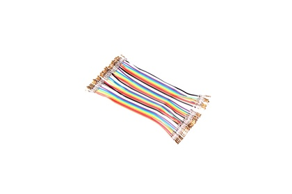
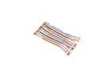
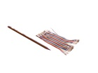
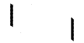

40 Wire 100 mm Rainbow Crimped Ribbon Cable - RBC1

Summary
Name: 40 Wire 100 mm Rainbow Crimped Ribbon Cable
ID: RBCC-40W-Z-L100-01
Hex ID: RBC1
WebPage: https://github.com/oomlout/oomlout-OOMP/wiki/RBCC-40W-Z-L100-01
Short URL: http://oom.lt/RBC1
Revision History: https://github.com/oomlout/oomlout-OOMP/blob/master/parts/RBCC-40W-Z-L100-01/
| Type |
Size |
Color |
Description |
Index |
RBCC
Crimped Ribbon Cable |
40W
40 Wire |
Z
Rainbow |
L100
100 mm |
01
|
Images



About
These 100 mm long cables are best used when making connections between boards that are close to one another as the length doesn't leave much room for play. However given their short length it also means there isn't much wire left over to look messy.
Specifications
| Info |
Value |
| Type |
Crimped Ribbon Cable |
| Size |
40 Wire |
| Color |
Rainbow |
| Description |
100 mm |
Extra Details
Spotted a mistake, want to add more? Let us know oomp@oomlout.com
All images and resources are licensed [CC BY-SA] unless otherwise stated (ie. the datasheets)